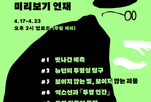
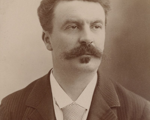
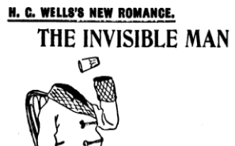

미리보기 연재
-

[시리즈]보이지 않는
#예고. 빛과 물질의 탐구가 마침내 도달한 세계
‘관찰 가능한 것만이 존재하는 것’이라고 믿어 온 물리학의 역사를 새롭게 쓰고 있는 이 책에서 ‘보이지 않는 것들의 과학’이 제공하는 매력에 빠져 보시길! 이로써 부디 이 책만은 당신의 책장에 오래도록 잘 보이길!
-
[시리즈]보이지 않는
#1. 빗나간 예측
2006년 5월 25일, 두 연구팀이 독립적으로 『사이언스Science』지에 투명 망토를 만드는 방법에 대한 이론적인 설명을 발표했다. 첫 번째 논문인 「광학적 등각 사상Optical Conformal Mapping」은 당시에 스코틀랜드 세인트앤드루스대학교에서 연구하던 울프 레온하르트Ulf Leonhardt가 쓴 것이고, 두 번째인 「전자기장의 제어Controlling Electromagnetic Fields」는 런던 임페리얼칼리지의 존 펜드리John Pendry가 노스캐롤라이나대학교의 데이비드 슈리그David Schurig, 데이비드 스미스David Smith와 함께 쓴 논문이었다. 무덤덤하게 전문 용어로 지은 제목만 봐서는 무슨 내용인지 추측하기 어렵지만, 두 논문은 매우 흥분되는 암시를 담고 있었다. 두 연구 팀은 빛이 중심부에 있는 물체를 우회해서 마치 아무것도 없는 것처럼 보이도록 하는 장치 설계를 제안했는데, 이를 구현하는 방식도 비슷했다. 이 장치는 이론적으로 물체에 “망토를 씌워서” 보이지 않게 할 수 있다.
-
[시리즈]보이지 않는
#2. 뉴턴의 투명성 탐구
광학 연구로 훅에게 크게 당한 뒤 뉴턴은 이 주제에 대해 발표하기를 꺼렸지만, 훅이 죽은 다음 해인 1704년에 마침내 『광학Opticks』을 출판했다. 『광학』에 나오는 여러 가지 실험은 투명함이 본질적으로 무엇인지 이해하려는 시도를 보여 준다. 왜 어떤 물체는 투명하고 어떤 물체는 투명하지 않은가? 이 책에서 다루는 주제와 가장 관련이 깊은 연구에서 뉴턴은 가장 작은 물질의 투명성을 탐구했다. 물질의 가장 작은 조각이라고 하면 오늘날 우리는 원자를 생각하지만, 뉴턴은 물질의 “가장 작은 부분”이라고 언급하면서 더 자세한 설명은 하지 않았다. 그는 유리와 같은 투명한 물질을 가루로 만들면 불투명해지는 것을 관찰했다. 반대로 종이와 같은 불투명한 물질을 기름에 담그면 투명해지는 것도 관찰했다(종이로 포장된 피자를 먹어 본 적이 있다면 종이 포장지가 기름기를 머금고 투명해진 것을 보았을 것이다).
-

[시리즈]보이지 않는
#3. 보이지 않는 빛, 보이지 않는 괴물
보이지 않는 빛이 물리학의 큰 그림에 어떻게 들어맞는지 더 잘 이해하기 위해서는 더 많은 세월이 필요했다. 그러나 이전에는 상상할 수 없었던 숨겨진 현상의 세계가 있다는 생각은 금방 퍼져 나갔다. 눈에 보이지 않는 빛이 존재한다면 보이지 않는 물질도 존재하지 않을까?
-

[시리즈]보이지 않는
#4. 엑스선과 『투명 인간』
엑스선은 과학과 의학에 혁명을 일으켰을 뿐만 아니라, 허버트 조지 웰스Herbert George Wells라는 과학 작가가 보이지 않음의 과학에 관한 가장 유명한 소설을 쓰도록 영감을 주었다. 이 소설이 바로 『투명 인간The Invisible Man』이다.
-
[시리즈]보이지 않는
#5. 투명 망토의 등장
아인슈타인의 중력 개념에 따르면 거대한 물체는 그 주변의 공간과 시간을 뒤틀어 그 공간을 통과하는 물질과 빛의 경로에 영향을 준다. 변환광학은 똑같이 왜곡된 공간의 수학을 사용하지만, 광학 장치를 설계하는 도구로 사용한다.